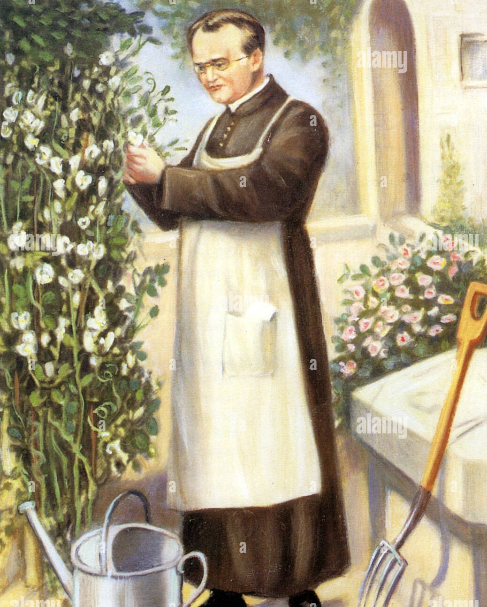

GREGOR MENDEL
A GREAT AUSTRIAN BIOLOGIST AND METEOROLOGIST

-
Gregor Mendel was an Austrian monk who discovered the basic principles of heredity through experiments in his garden. Mendel's observations became the foundation of modern genetics and the study of heredity, and he is widely considered a pioneer in the field of genetics.
-
Gregor Mendel, known as the "father of modern genetics," was born in Austria in 1822. A monk, Mendel discovered the basic principles of heredity through experiments in his monastery's garden.
- His experiments showed that the inheritance of certain traits in pea plants follows particular patterns, subsequently becoming the foundation of modern genetics and leading to the study of heredity.
- Following his graduation, Mendel enrolled in a two-year program at the Philosophical Institute of the University of Olmütz. There, he again distinguished himself academically, particularly in the subjects of physics and math, and tutored in his spare time to make ends meet.
- Despite suffering from deep bouts of depression that, more than once, caused him to temporarily abandon his studies, Mendel graduated from the program in 1843.
- That same year, against the wishes of his father, who expected him to take over the family farm, Mendel began studying to be a monk: He joined the Augustinian order at the St. Thomas Monastery in Brno, and was given the name Gregor.
- At that time, the monastery was a cultural center for the region, and Mendel was immediately exposed to the research and teaching of its members, and also gained access to the monastery’s extensive library and experimental facilities.
- Around 1854, Mendel began to research the transmission of hereditary traits in plant hybrids. At the time of Mendel’s studies, it was a generally accepted fact that the hereditary traits of the offspring of any species were merely the diluted blending of whatever traits were present in the “parents.”
- It was also commonly accepted that, over generations, a hybrid would revert to its original form, the implication of which suggested that a hybrid could not create new forms. However, the results of such studies were often skewed by the relatively short period of time during which the experiments were conducted, whereas Mendel’s research continued over as many as eight years (between 1856 and 1863), and involved tens of thousands of individual plants.
- Mendel chose to use peas for his experiments due to their many distinct varieties, and because offspring could be quickly and easily produced. He cross-fertilized pea plants that had clearly opposite characteristics—tall with short, smooth with wrinkled, those containing green seeds with those containing yellow seeds, etc.—and, after analyzing his results, reached two of his most important conclusions.
- The Law of Segregation, which established that there are dominant and recessive traits passed on randomly from parents to offspring (and provided an alternative to blending inheritance, the dominant theory of the time), and the Law of Independent Assortment, which established that traits were passed on independently of other traits from parent to offspring.
- Gregor Mendel died on January 6, 1884, at the age of 61. He was laid to rest in the monastery’s burial plot and his funeral was well attended. His work, however, was still largely unknown.
- I like Gregor Mendel because of his miraculous achievements and discoveries on inheritance and genetics for the 1st time in the history...Being a priest and monk, he had done a great deal of work for the experiments of the pea plant.
All rights reserved.
Feel free to contact @ Muhammad Rehan
muhammmadrehan02@gmail.com